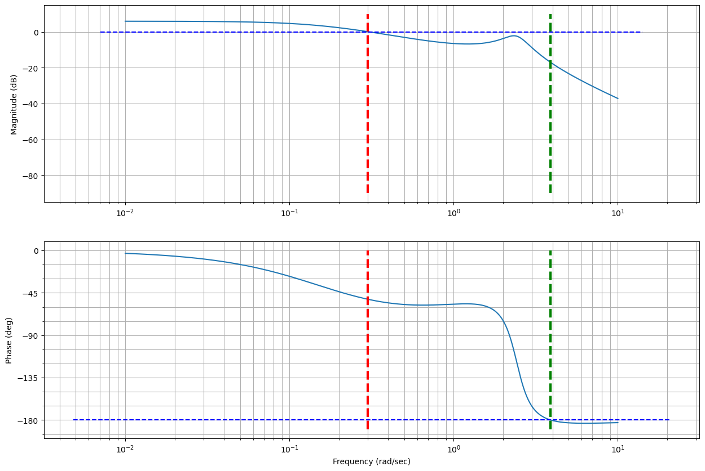
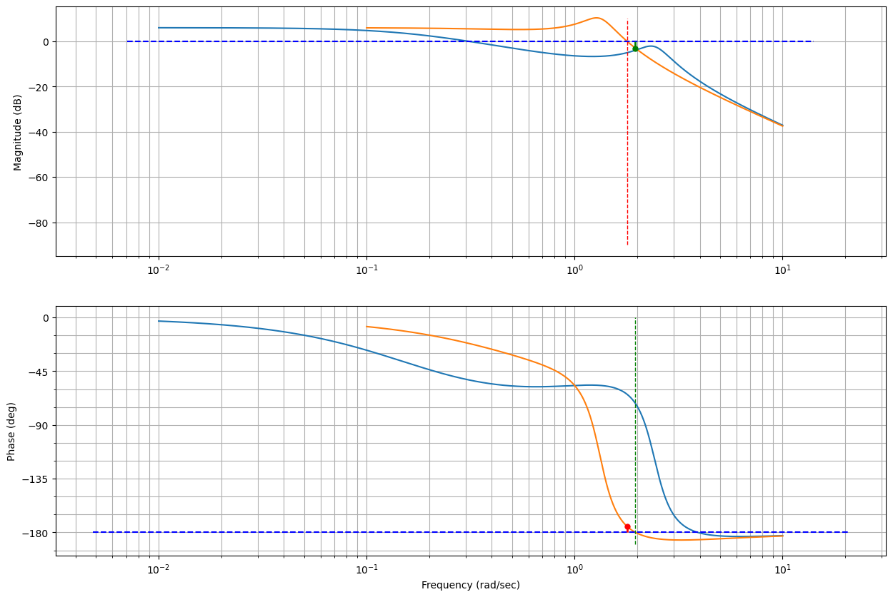
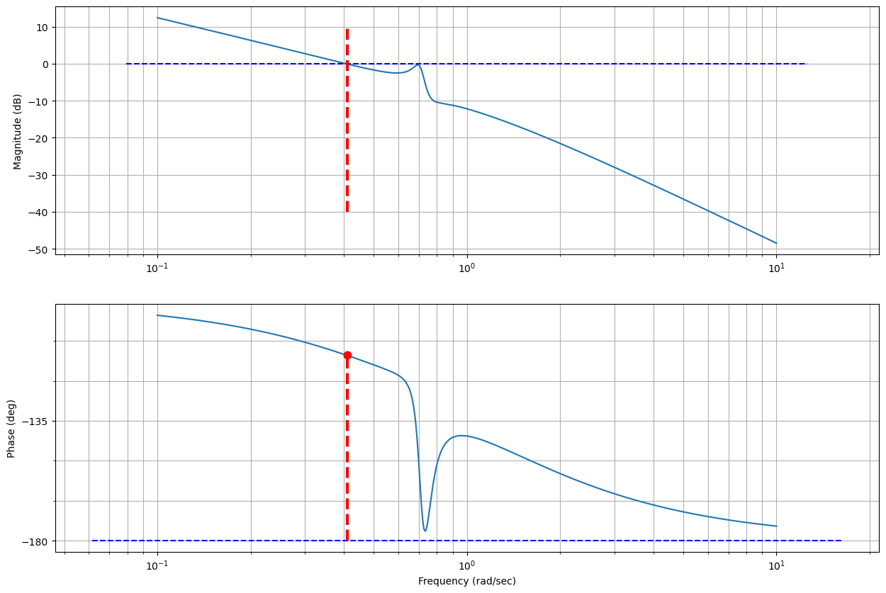
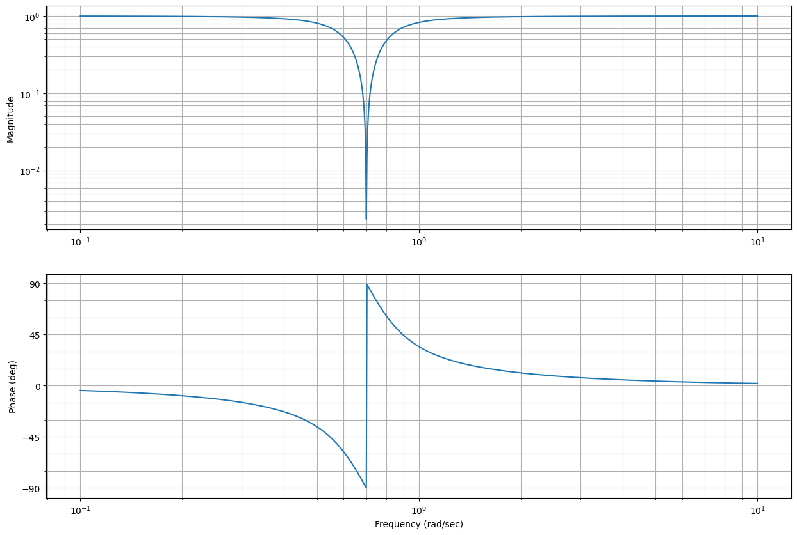
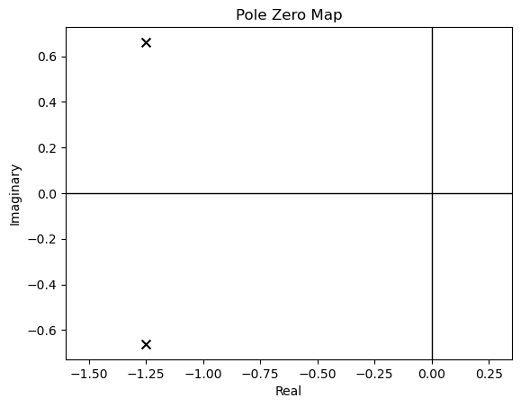
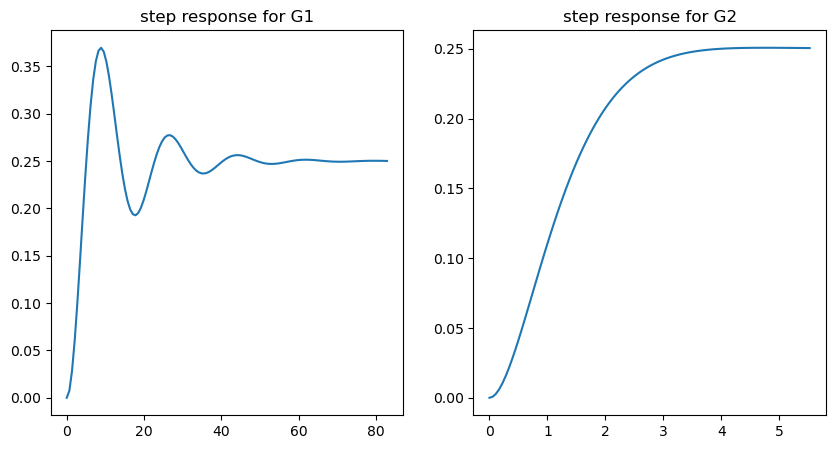
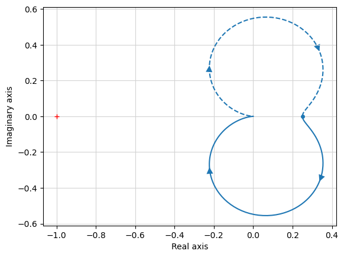

import control
import matplotlib.pyplot as plt
import numpy as npStability Margins
Gain and Phase Margins
Given an LTI system with transfer function: \(G(s) = C(sI - A)^{-1}B\)
and an input signal: \(u(t)=Asin(\omega t)\)
Assuming that the system is asymptotically stable, it is possible to verify that:
\[y(t)=A|G(j\omega)|sin(\omega t + \angle G(j\omega) ) \]
This means that the output \(y(t)\) converges to a sinusoidal signal that has the same frequency of the input, and that has magnitude \(A|G(j\omega)|\) and is shifted in phase by \(\angle G(j\omega)\).
Note also that this is true independently of the initial state \(x_0\). In fact, since the system is asymptotically stable, the effect of the initial state on the output will go to zero.

As a result: - Magnitude can change - Phase can change
- Gain: magnitude of output wrt magnitude of input
- Phase: shift of the signal (measured as angles or relative to the signal wavelength)
- delay in the signal is a negative phase sift (convention)
- The output of a single input frequency is a combination of gain and phase shift
- Gain and Phase depends on the frequency (can be different at different frequencies)
- See Bode Plots.
- When we talk about gain and phase margins we need to consider all frequencies
See also notebook 06_Intro_to_freq_response_and_bode_plots
Margins
Informal definition: extra amount of a quantity that we can use if needed
Gain and Phase margin: extra gain or phase that we have available before the system starts to oscillates or become unstable
- Robustness of the system
- Makes it possible to quantify how stable a system is
- Systems (or designs) that have less margin could be considered as being “less” stable: smaller variations in the system could lead to instability
Why do we need margins
- When we design a control system we use a model
- Test is done in known conditions
- We make assumptions on how the system behaves
- Things rarely behave the way we expect!
- This leads to gain and phase errors
If we think of a brushless DC motor: - Rotor inertia is different: commanded torque generates a different acceleration (gain error) - Power is sensitive to temperature (gain error) - Higher drag in bearing: motor is slower to respond (gain and phase error) - Slower computer: adds delay (phase error) - etc.
These are called Process Variations: We want our controller to be robust to these because we cannot know our system perfectly and hence we need margins.
The more uncertainty we have the more margin we should design in.
What makes a system unstable
- \(G(s)\) is unstable if at least one pole (root of the characteristic eq.) is in the RHP (Re \(>\) 0 )
- We usually design the open loop system and then we use Bode, Nyquist, Root Locus to assess the closed loop stability and performance
- For this reason is useful to link the open loop performance to their closed loop ones.
What makes an open loop system, unstable in closed loop
Given a system \(G(s)\)

|
We know that the closed loop equivalent is:
\[ G_{c}(s) = \frac{G(s)}{1+G(s)} \]
\(G_{c}(s)\) must have a pole in the RHP
For this to happen we know that \(1+G(s)=0\) or \(G(s)=-1 \Rightarrow G_c(s) \rightarrow \infty\)
We should keep our open loop \(G(s)\) away from -1 then!
We saw this already with Nyquist
It is useful to consider the \(-1\) system in more details:
Gain is 1 (0 \(dB\))
Phase is \(-180^o\)
If our system, at any one frequency produces 0 \(dB\) and a phase of \(-180^o\), then it is unstable
Our system must stay away from that point throughout the frequency spectrum
Margin: how far away our system is from the \(0dB\) and \(-180^o\) point
- Gain margin is defined as the amount of change in open-loop gain needed to make a closed-loop system unstable.
- Phase margin is defined as the amount of change in open-loop phase needed to make a closed-loop system unstable.
see also stability margins
Bode Plot
- Start identifying our point on the diagrams:
- Let’s now suppose to increase gain
- Increasing gain, does not modify the phase
- The crossover frequency moves closer to where the phase diagram crosses the \(-180^o\) point.
- Our system has become less stable
- If we choose the gain \(K\) wrongly the system becomes unstable

|
The gain required is the gain at the \(-180^o\) frequency. This is the gain margin.
Similarly for the phase (e.g., slower computers would add a delay which only affects the phase)

|
- Phase margin: how much phase delay takes to make \(-180^o\) phase at the 0 \(dB\) gain frequency.
- \(90^o\) in our toy example
- Easy to read the gain and phase margin directly from the Bode plot
Python Control Library: Stability Margins
Let’s define the open loop transfer function:
G = control.tf([1.3, 2], [1, 1, 6, 1])
print(G)
1.3 s + 2
-------------------
s^3 + s^2 + 6 s + 1
We can now call the bode_plot function of the Python Control Library to plot the Bode plots.
fig = plt.figure(figsize=(15, 10))
control.bode_plot(G, dB=True);
# Let's also plot lines corresponding to the 0 dB point (gain plot), and the -180 deg point (phase plot)
ax1,ax2 = plt.gcf().axes # get subplot axes
plt.sca(ax1) # magnitude plot
plt.plot(plt.xlim(),[0, 0],'b--')
plt.plot([0.3, 0.3],[-90, 10],'r--', linewidth=3)
plt.plot([3.9, 3.9],[-90, 10],'g--', linewidth=3)
plt.sca(ax2) # phase plot
plt.plot(plt.xlim(),[-180, -180],'b--')
plt.plot([0.3, 0.3],[-190, 0],'r--', linewidth=3)
plt.plot([3.9, 3.9],[-190, 0],'g--', linewidth=3)
- Approximately 130 deg of phase margin (red)
- Approximately 15 dB of gain margin (green)
The command margin returns the gain and phase margins, and the corresponding crossover frequencies.
Note: gain value returned by the margin command is not in dB
gm, pm, wpc, wgc = control.margin(G);
print('Gain Margin {:.2f} at frequency (rad/sec) {:.2f}'.format(gm, wpc))
print('Gain Margin (dB) {:.2f} at frequency (rad/sec) {:.2f}'.format(20*np.log10(gm), wpc))
print('Phase Margin {:.2f} (deg) at frequency (rad/sec) {:.2f}'.format(pm, wgc))Gain Margin 7.14 at frequency (rad/sec) 3.91
Gain Margin (dB) 17.08 at frequency (rad/sec) 3.91
Phase Margin 127.69 (deg) at frequency (rad/sec) 0.31Additional comments
- Gain and phase margin refers to margin in the whole open loop system
- Uncertainty in one specific parameters can affect you more than you think.
- Try and change on of the parameters of the denominator of the \(G(s)\) above and see what happens
For example, consider what happens with the following transfer function:
G1 = control.tf([1.3, 2], [1, 1, 2, 1])
print(G1)
1.3 s + 2
-------------------
s^3 + s^2 + 2 s + 1
gm, pm, wpc, wgc = control.margin(G1);
print('Gain Margin {:.2f} at frequency (rad/sec) {:.2f}'.format(gm, wpc))
print('Gain Margin (dB) {:.2f} at frequency (rad/sec) {:.2f}'.format(20*np.log10(gm), wpc))
print('Phase Margin {:.2f} (deg) at frequency (rad/sec) {:.2f}'.format(pm, wgc))Gain Margin 1.43 at frequency (rad/sec) 1.96
Gain Margin (dB) 3.10 at frequency (rad/sec) 1.96
Phase Margin 5.04 (deg) at frequency (rad/sec) 1.79fig = plt.figure(figsize=(15, 10))
control.bode_plot(G, dB=True);
control.bode_plot(G1, dB=True);
# Let's also plot lines corresponding to the 0 dB point (gain plot), and the -180 deg point (phase plot)
ax1,ax2 = plt.gcf().axes # get subplot axes
plt.sca(ax1) # magnitude plot
plt.plot(plt.xlim(),[0, 0],'b--')
plt.plot([1.79, 1.79],[-90, 10],'r--', linewidth=1)
plt.plot([1.96, 1.96],[-3.10, 0],'g--', linewidth=2)
plt.plot([1.96],[-3.10],'g.', markersize=10)
plt.sca(ax2) # phase plot
plt.plot(plt.xlim(),[-180, -180],'b--')
plt.plot([1.79, 1.79],[-180, -180+5.04],'r--', linewidth=2)
plt.plot([1.79],[-180+5.04],'r.', markersize=10)
plt.plot([1.96, 1.96],[-190, 0],'g--', linewidth=1)
Effectively we have substantially reduced our stability margins.
Reading stability margins: misleading values
Let’s now consider the following transfer function:
G2 = control.tf([0.38, 0.038, 0.38*0.55], [1, 1.06, .56, 0.5, 0])
print(G2)
0.38 s^2 + 0.038 s + 0.209
---------------------------------
s^4 + 1.06 s^3 + 0.56 s^2 + 0.5 s
And as before we can plot the Bode plots and verify what stability margins we have:
fig = plt.figure(figsize=(15, 10))
control.bode_plot(G2, dB=True);
ax1,ax2 = plt.gcf().axes # get subplot axes
plt.sca(ax1) # magnitude plot
plt.plot(plt.xlim(),[0, 0],'b--')
plt.plot([0.41, 0.41],[-40, 10],'r--', linewidth=3)
plt.sca(ax2) # phase plot
plt.plot(plt.xlim(),[-180, -180],'b--')
plt.plot([0.41, 0.41],[-180, -180+69.77],'r--', linewidth=3)
plt.plot([0.41],[-180+69.77],'r.', markersize=15, linewidth=3)
Infinite gain margin: phase diagram never crosses the -180 deg. This would mean that you can add any gain you desired and the closed loop system would never go unstable.
Phase margin is approximately: 70 deg
We can confirm this with the Python Control Library:
gm, pm, wpc, wgc = control.margin(G2);
print('Gain Margin {:.2f} at frequency (rad/sec) {:.2f}'.format(gm, wpc))
print('Gain Margin (dB) {:.2f} at frequency (rad/sec) {:.2f}'.format(20*np.log10(gm), wpc))
print('Phase Margin {:.2f} (deg) at frequency (rad/sec) {:.2f}'.format(pm, wgc))Gain Margin inf at frequency (rad/sec) nan
Gain Margin (dB) inf at frequency (rad/sec) nan
Phase Margin 69.77 (deg) at frequency (rad/sec) 0.41- However, consider the dip in the phase plot: a small phase lag into the system it would bring the phase diagram to cross the -180 deg line, and the gain, for that frequency is very close to 0dB.
- We do not have 70deg of phase margin, in practise we only have ~2 deg.
- This are important considerations when designing a controller
Using the Nyquist Plot and the System Sensitity Revised
Inserire spiegazione Margine fase e Guadagno nel Diagramma di Nyquist (see for ex. CA_AUT_L06_Marg_Stab_1.pdf
To try an understand what is happening a little more, let’s draw the Nyquist plot:
fig = plt.figure(figsize=(10,5))
control.nyquist_plot(G2)
# plt.xlim((-1.2, 0))
# plt.ylim((-1.2, 1.2))0- No amount of gain can move the plot around -1 (the gain is 0 when the plot crosses the real axis)
- In addition to the gain and phase margins we can consider the behaviour of the point that is closer to the -1 point.
- Process variations that affect that part of the plot are worse than pure gain or phase alone.
- This is where the sensitivity function of the system can help us.
We saw that the sensitivity function is:
\[ S(s) = \frac{1}{1+GR} \]
- Describes how feedback influences the disturbances
- If \(|GR|\) is large at frequencies where the power of the disturbance is concentrated, then \(|S|\) is small and the effect of the disturbance on the output is attenuated
- Lower values of \(|S|\) means higher attenuation of the external disturbance.
- Typically, plan disturbances are low frequency, and one would like \(|GR|\) to be large at low frequency
See notebook 08_Main_types_of_loops_and_transfer_functions.
We can also define the Nominal Sensitivity Peak:
\[ M_s = \max_{0 \leq \omega \leq \infty} | S(j\omega) | = \max_{0 \leq \omega \leq \infty} \Big| \frac{1}{1+G(j\omega)R(j\omega)} \Big| \]
Closest point of the Nyquist plot to -1
- This is the point that is most in danger of causing instability
- Rember that the Nyquist plot shows the open loop transfer function: \(G(j\omega)R(j\omega)\)
- We want to calculate the minimum distance between -1 and the curve \(G(j\omega)R(j\omega)\):
\[ d = \min(|G(j\omega)R(j\omega) - (-1)|) \]
- Note that if we use the metric above, we have something that tells us the smaller the number is the larger its sensitivity to variations (similar to robustness)
- If we take the reciprocal insted we have a metric such that the larger it is, the larger the sensitivity
\[ \max_{-\infty < \omega < \infty} \Big| \frac{1}{G(j\omega)R(j\omega) +1} \Big| \]
Since Nyquist is symmetrical w.r.t the real axis we can restrict it to \({0 \leq \omega \leq \infty}\).
We have now a new definition for our sensitivity function: it is the minimum distance between the point -1 and the Nyquist curve of \(R(j\omega)G(j\omega)\)
Let’s now consider the block diagram of a standard “servo” or tracking configuration of classical feedback control:

Let’s restrict ourselves to the inputs \(y_{ref}\) and \(d\). In this case we saw that we can write:
\[ Y(s) = \frac{RG}{1+RG}Y_{ref}(s) + \frac{1}{1+RG}D(s) \]
- As we saw the sensitivity function captures what happens to the system when we have disturbances or process variation
- We can determine sensitivity across the entire spectrum using the Bode plot.
Let’s revisit our system
G2 = control.tf([0.38, 0.038, 0.38*0.55], [1, 1.06, .56, 0.5, 0])
print(G2)
0.38 s^2 + 0.038 s + 0.209
---------------------------------
s^4 + 1.06 s^3 + 0.56 s^2 + 0.5 s
We can calculate the sensitivity function \[ \frac{1}{1+G} \]
as:
sensitivity = control.tf([1, 53/50, 14/25, 0.5], [1, 1.0595, 0.94, 0.5378, 0.2090])
print(sensitivity)
s^3 + 1.06 s^2 + 0.56 s + 0.5
--------------------------------------------
s^4 + 1.06 s^3 + 0.94 s^2 + 0.5378 s + 0.209
fig = plt.figure(figsize=(15, 10))
control.bode_plot(sensitivity, dB=True);
ax1,ax2 = plt.gcf().axes # get subplot axes
plt.sca(ax1) # magnitude plot
plt.plot(plt.xlim(),[0, 0],'b--') # 0 dB line
plt.plot([0.71],[14],'r.', markersize=15, linewidth=3)
plt.text(0.8, 13, 'Max sensitivity');Text(0.8, 13, 'Max sensitivity')- The Max Sensitivity Peak is approximately \(13\) dB
- If we convert it back out of dB: 10^(13/20) = 4.5
- This is a very high value - Typical sensitivity peak should stay between 1.3 and 2
Can we improve?
- Half the gain
fig = plt.figure(figsize=(15, 10))
control.bode_plot(G2, dB=True);
control.bode_plot(0.5*G2, dB=True);- The gain plot in the open loop dropped by 2 or 6 dB
We can calculate the sensitivity function \[ \frac{1}{1+0.5*G} \]
Note that we cannot simply multiply the previous sensitivity by 0.5. It matters where the gain is!
new_sensitivity = control.tf([1, 1.06, 0.56, 0.5, 0],
[1, 1.05995, 0.749986425, 0.518980167284, 0.104492961264])fig = plt.figure(figsize=(15, 10))
control.bode_plot(sensitivity, dB=True); # omega_limits=[0.5, 1]
control.bode_plot(new_sensitivity, dB=True);
ax1,ax2 = plt.gcf().axes # get subplot axes
plt.sca(ax1) # magnitude plot
plt.plot(plt.xlim(),[0, 0],'b--'); # 0 dB line
#plt.plot([0.71],[14],'r.', markersize=15, linewidth=3)
#plt.text(0.8, 13, 'Max sensitivity');- We substantially improved the sensitivity
- Peak now less than 5 dB
- Which corresponds to 1.7
What did we do to our system? Let’s now analyse the step response
t, yout = control.step_response(G2/(1+G2))
t_new, yout_new = control.step_response(0.5*G2/(1+0.5*G2))fig = plt.figure(figsize=(15, 5))
plt.plot(t, yout, 'b')
plt.plot(t_new, yout_new, 'r')
plt.xlim(0, 50)
plt.xlabel('Time (seconds)')
plt.ylabel('Amplitude')
plt.grid();- We have slowed down the response of the system. The rise time is now much slower.
- Reducing the gain across the frequency spectrum, affects low frequencies, which determine our rise time and our ability to follow slow moving reference signals
Can we do better?
Let’s apply a more complex controller (more to come later):
notch = control.tf([1, 0, 0.7**2], [1, 0.7/2, 0.7**2])
# notch = (s**2 + 0.7**2)/(s**2 + 0.7/2*s + 0.7**2)
#formally this is a notch filter centered at 0.7 rad/s with a Q = 2.
# This is pretty steep, so it should only affect a narrow frequency rangefig = plt.figure(figsize=(15, 10))
control.bode_plot(notch);
Let’s see the bode plot of the new system
fig = plt.figure(figsize=(15, 10))
control.bode_plot(G2, dB=True);
control.bode_plot(0.5*G2, dB=True);
control.bode_plot(notch*G2, dB=True);- As expected only frequencies around 0.7 rad/s are affected.
We can calculate the new sensitivity function:
\[ S = \frac{1}{1+notch \cdot G} \]
notch_sensitivity = control.tf([1, 1.41, 1.421, 1.2154, 0.4494, 0.245, 0],
[1, 1.40979, 1.801045539, 1.253306815398, 0.8446772388437, 0.263622089835, 0.10243055628])fig = plt.figure(figsize=(15, 10))
control.bode_plot(sensitivity, dB=True); # omega_limits=[0.5, 1]
control.bode_plot(new_sensitivity, dB=True);
control.bode_plot(notch_sensitivity, dB=True);
ax1,ax2 = plt.gcf().axes # get subplot axes
plt.sca(ax1) # magnitude plot
plt.plot(plt.xlim(),[0, 0],'b--'); # 0 dB line- The sensitivity peak has been moved to lower frequencies, but it still around \(5\) dB
t_notch, yout_notch = control.step_response(notch*G2/(1+notch*G2))fig = plt.figure(figsize=(15, 5))
plt.plot(t, yout, 'b')
plt.plot(t_new, yout_new, 'r')
plt.plot(t_notch, yout_notch, 'g')
plt.xlim(0, 50)
plt.xlabel('Time (seconds)')
plt.ylabel('Amplitude')
plt.grid();The step response rise time is now closer to our original rise time
The notch filter is not affecting low frequencies as much as the simple constant gain did
Much more methods can be used and we will investigate other methods in the future
Depends on performance requirements
But also on the complexity of the control that we can have
Regardless of the method however, taking into account the sensitivity is important!
Considerations on stability margins, relative stability and Nyquist plots
Let’s consider two systems:
G1 = control.tf([1], [30, 5, 4])
G2 = control.tf([1], [2, 5, 4])
print('G1:', G1), print('G2:', G2);G1:
1
----------------
30 s^2 + 5 s + 4
G2:
1
---------------
2 s^2 + 5 s + 4
Poles of the system G1
np.roots([30, 5, 4])array([-0.08333333+0.35551215j, -0.08333333-0.35551215j])control.pzmap(G1, plot=True);Poles of the system G2
np.roots([2, 5, 4])array([-1.25+0.66143783j, -1.25-0.66143783j])control.pzmap(G2, plot=True);
To confirm, let’s evaluate the step response of the two systems:
# Step response
t1, y1 = control.step_response(G1)
t2, y2 = control.step_response(G2)
fig, axs = plt.subplots(1, 2, figsize=(10, 5))
axs[0].plot(t1, y1)
axs[0].set_title('step response for G1')
axs[1].plot(t2, y2)
axs[1].set_title('step response for G2');
Let’s now look at the Nyquist plots
print('G1:', G1), print('G2:', G2);G1:
1
----------------
30 s^2 + 5 s + 4
G2:
1
---------------
2 s^2 + 5 s + 4
- \(|G|\) and \(\angle G\) at \(\omega=0\) (start of the plot)
- \(|G|\) and \(\angle G\) at \(\omega=\infty\) (mid point of the plot)
- Intersections with the imaginary axis
- Intersections with the real axis
For the system G1:
control.nyquist_plot(G1)0
control.nyquist_plot(G2)0import control
G_s = control.tf([1, 1], [1, 2, 2])
print(G_s)
s + 1
-------------
s^2 + 2 s + 2
control.nyquist(G_s)0G_s = control.tf([1, 1], [1, 2, 1])
print(G_s)
control.nyquist(G_s)
s + 1
-------------
s^2 + 2 s + 1
0